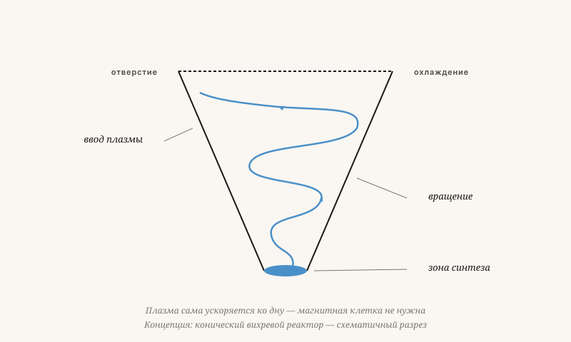

Термоядерный реактор без магнитной клетки
ITER и JET тратят миллиарды на удержание плазмы магнитами. Мой подход: пусть плазма удерживает себя сама — за счёт вращения.
Якобус ван Мерксштейн · 11 мин чтения · 23 мая 2026

Управляемый вихрь — по Тесла
Проблема не техническая — она концептуальная
ITER, JET, Wendelstein-7X. Миллиарды, десятилетия — и по-прежнему ни одного нетто-энергетического выхода. С 1955 года синтез обещают «через тридцать лет». Мы сейчас спустя семьдесят лет. Это не случайность. Это признак того, что концепция не работает.
Нынешние реакторы пытаются удержать плазму магнитами в четырёхмерной системе мышления. Плазма этому не подчиняется. Она уходит путями, которые становятся видны лишь тогда, когда учитываешь G (масштаб) и W (ценность).
Несоответствие масштабов (G)
Плазма — это совокупность заряженных частиц с огромным разбросом масс: электроны в 1836 раз легче протонов. Магниты работают на большом масштабе. Пути утечки находятся на малом масштабе. Кто не рассматривает малый масштаб отдельно, всегда теряет плазму.
Конический вихревой реактор
Конический вихрь — это воронкообразный реактор, в котором плазма не удерживается, а ускоряется во вращающемся потоке — подобно воде в водовороте. Вращение создаёт удерживающую силу.
Коническая форма обеспечивает сжатие по мере того, как плазма приближается к дну: чем ближе к острию, тем быстрее вращение, тем выше плотность, тем больше вероятность синтеза.
Параллель с гидродинамикой не случайна. Торнадо — это тоже сгусток энергии, существующий благодаря собственному вращению. Никто не запирает торнадо в клетку.

Преимущества против трёх открытых вопросов
Преимущества
- Никаких экзотических сверхпроводников. ITER использует магниты, охлаждённые до −269°C. Вихревому реактору нужны значительно менее мощные магниты.
- Непрерывный режим вместо импульсов. Вращение может поддерживаться, как фонтан продолжает течь. Токамаки работают импульсами длиной в несколько секунд.
- Саморегуляция. Поток реагирует на возмущения, самостоятельно исправляя их. Магнитное удержание реагирует на них, разрушаясь.
Открытые вопросы
- Первый запуск. Как запустить начальное вращение? Сочетание магнитного импульса и инерционной инжекции могло бы сработать.
- Материал стенок. Излучение и нейтроны воздействуют на стенки иначе, чем в токамаке, — лучше или хуже, этот вопрос ещё открыт.
- Извлечение энергии. Как отводить тепло синтеза, не нарушая вращение? Мантийное течение с гелиевым охлаждением могло бы работать, но требует точной настройки.
Проведите эксперимент
Я не физик-плазменщик по профессии. Что у меня есть — это интуиция, основанная на десятилетиях работы с потоками: вода вокруг корпусов кораблей, воздух вокруг крыльев, биомасса через инжекторы. Потоки ведут себя так, как они ведут себя, независимо от среды.
Серьёзный второй шанс
Я прошу не: «поверьте мне». Я прошу: «проведите эксперимент». Небольшой конический реактор не стоит миллиардов — несколько миллионов, хорошая команда и пара лет. В рамках модели Nova Democratia независимая комиссия могла бы направить пять процентов бюджета синтеза на нетрадиционные конструкции.
Термоядерный реактор без магнитной клетки
ITER тратит двадцать миллиардов евро на удержание плазмы с помощью магнитов. Альтернатива: позволить плазме удерживать себя самой — через вращение.
С 1955 года термоядерный синтез обещают «через тридцать лет». С тех пор прошло семьдесят лет. ITER, JET, Wendelstein-7X — миллиарды евро, нет чистой выработки энергии. Это не случайность: это признак того, что концепция не работает. Проблема не техническая, а концептуальная: плазма ускользает по путям, которые можно увидеть лишь включив в анализ закон масштаба G. Электроны в 1836 раз легче протонов; магниты работают на большом масштабе, а пути утечки находятся на малом.
Конический вихревой реактор — это воронкообразное устройство, в котором плазма не удерживается, а ускоряется во вращающемся потоке, подобно воде в водовороте. Коническая форма обеспечивает компрессию по мере приближения плазмы к основанию: чем ближе к вершине, тем быстрее вращение, тем выше плотность, тем больше вероятность синтеза. Параллель с торнадо не случайна — никто не заключает торнадо в клетку.
Преимущества: не нужны сверхпроводящие магниты, охлаждаемые до минус 269 градусов; непрерывная работа вместо импульсов по несколько секунд; самоуправляемость. Открытые вопросы: первый запуск, материал стенок и извлечение энергии без нарушения вращения.
Чего я прошу
Не «поверьте мне», а «проведите эксперимент». Небольшой конический реактор стоит не миллиарды — несколько миллионов, хорошая команда, несколько лет. В рамках модели Nova Democratia независимая комиссия могла бы направить пять процентов бюджета на термоядерный синтез к нетрадиционным конструкциям. Потоки ведут себя так, как им свойственно, — вне зависимости от среды.